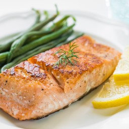

Blog Trespalacios
Cualquiera Puede Cocinar
FAVORITOS:
Mariscos ¿Realmente son afrodisiacos? 3/7/2016
Hoy descubriremos si esto es un mito o realidad, usted que piensa?

Se sabe, por ejemplo, que un déficit de zinc inhibe el deseo. Su carencia provoca retraso en el crecimiento y en la maduración sexual; además disminuye el sentido del gusto, según el prestigioso Manual Merck de Medicina. Por ello, potenciar la líbido se convierte en la función primordial de determinados productos y sustancias, como ocurre con el caso de las ostras, que se destacan por su alto contenido de zinc, al igual que el que contienen diversos mariscos como el salmón, cangrejos y pescados. Estas ayudan a la producción de testosterona, una hormona importante en el surgimiento del deseo sexual. Para su mayor efecto sexual se sugiere comerlas frescas, recién abiertas y rociadas con limón. Mucho cuidado con su procedencia, ya que si están en mal estado, podría ocasionar molestos síntomas estomacales y graves enfermedades Leer Mas...
Mi mujer cada vez que come cangrejo se pone cariñosa, yo pienso que son afrodisiacos. jejejeje
Yo vivo cerca al mar y como mariscos todo el tiempo y no me hace ningun efecto, mi novio a veces me tiene que insistir para estar con el :p
Aprende a mudurar la carne con los expertos 20/7/2016
Pasos muy sencillo pero te ayudaran a dar un realce exquisito

En esta nota vamos a hablar sobre la maduración de la carne de vacuno, que es el proceso de descomposición de la carne por un plazo máximo de 4 semanas luego del sacrificio del animal, para que una serie de bacterias y microorganismos actúen sobre ella y descompongan el colágeno, que es lo que hace que la carne este firme y dura, logrando mayor terneza en la carne e intensidad en su sabor. ¿Qué cambios se producen? Leer Mas...
Interesante no sabia que al comer carne tambien nos comemos bacterias y todo eso... pero me gusta mucho y no me importa. Gracias por la info
Eso es lo que llamo consejos utilces, aprovecho para felicitarlos muy buen trabajo sin así y no nos desamparen... espero una recetar especial de carnes al estilo Europeo.
Basura, si quiero carne voy donde el carnicero y me la vende como yo quiera, para que gastar tiempo en algo que ya se puede comprar listo, es una locura, no me sirve de nada este blog.